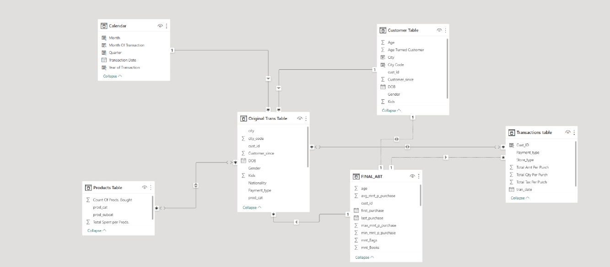
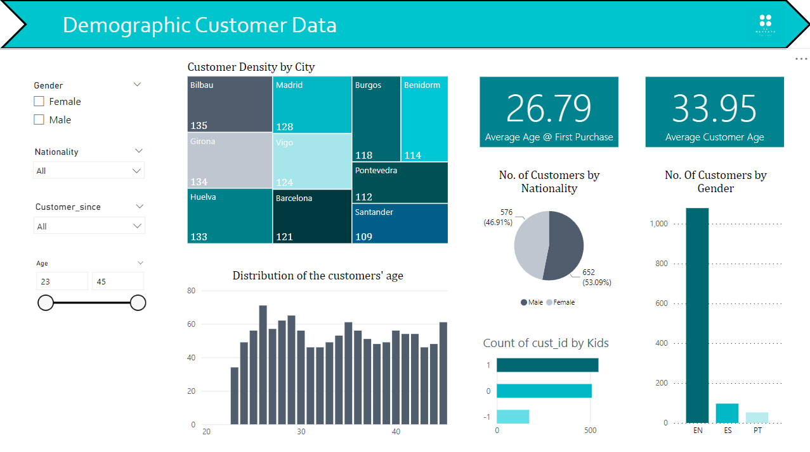
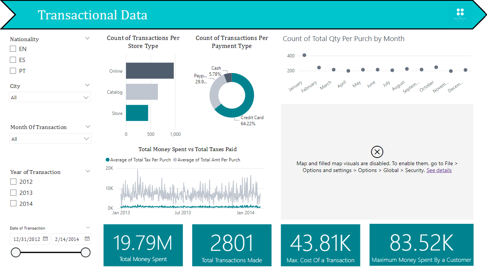
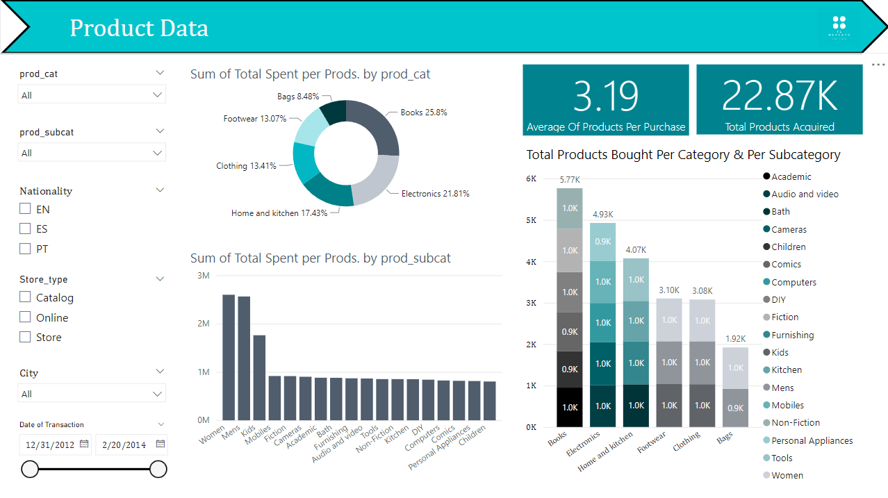

Brief Project Description
This project, consisted of helping an artificial retail company called "Il Mercato", take advantage of the data that was stored in its information systems
and to develop different analyses that will help the growth and success of the company.
Required Deliverables
In order for one to be able to have full marks on the projects we were asked to submit the following deliverables:
- An Analytic-Based Table containing the information regarding every single customer and their purchase history;
- Some form of intuitive visualization to present the company's board, displaying the key characteristics and interesting aspects about the originally given database.
- A Project Report (in .pdf format) stating all the steps taken to obtained the aforementioned deliverables and conclusions achieved - not present in the Portfolio;
The Work
In order to kick off the project started by analysing the dataset that we were provided.
It was clear that the data needed some treatment in its original state since we had a random undesired factors (as you would expect in a real-world dataset).
Within the data, we had various inconsistencies such as outliers, missing values and also some wrongly input observations within the data.
Data Treatment & Preparation of the final Transactional Table
To treat the data we opted to utilize both SAS Miner and Python, as these were the softwares that were explored in the course to treat the data and also because
we intended to demonstrate our comfort in using the topics that were addressed during the classes. We opted to divide the data Preprocessing stage in 4 steps:
A first step in which the main focus was to remove all outliers and what seemed like uncommon observations that could be widening our range of values for the different features.
This step was done using SAS Miner, as it was very simple and very easy to do this task using the software.
In this second step we utilzed Python in order to treat some other of the inconsistencies that we had in the dataset, which we couldn't
treat in SAS Miner - at least in such a practical manner. To do this step we used libraries like Pandas and NumPy. We also performed some feature engineering in order to simplify
the interpretation of some of the features that we had in the dataset.
In this third phase, we executed the imputation of the missing values that we had in the dataset. This was done using SAS Miner, since the tool has a
very practical way of doing this task.
In this forth and final step, we made a final assessment of the possible inconsistencies that still existed within the dataset and we created the final version
of the transactional table - the resulting dataset that will be utilized for the remainder of this project. This task was performed in Python.
It is worth noting that for this part of the project our main priority was to maintain as many columns as possible, in order to maintain the most possible information regarding our customers,
even if that meant losing a couple observations.
The result of this pre-processing stage turned out to be a Transactional Table which will be the one that is going to be utilized to create both the Analytical-Based Table as well as the Dashboards
requested by the hiring company.
Creation of the Analytical-Based Table (ABT)
After the creation of the transactional table we proceeded to create the Analytical-Based Table (which was one of the mandatory deliverables of this project). This, was done using the SAS Studio Software
which essentially is a software that uses SQL Code to perform the tasks that are required. In order to create the ABT we proceeded to add up and organize the data existent in the final transactional table,
combining all the existent information regarding the company's customers into a single table. In this table each will row will include and describe the characteristics of each customer that is
represented in the dataset. In this stage, we also created some new features in order to combine information of previously existing features in order to simplify the future process of analysing this data.
Data Importation and creating teh Data Model in PowerBI
In order to create the Dashboards using PowerBI, we first had to create a data model that would be used to create these dashboards. In order to do this, we imported the previsouly created Analytical-Based Table
as well as the Transactional Table that we obtained after treating the data in the initial stages of this project, both of them as queries. Then, to the transactional table we made some basic changes using the Power Query Editor -
mostly regarding formats or variables that were deemed unnecessary for the purpose of our visualizations.
In order to facilitate the creation of the graphics and also to give us some flexibility regarding the possible visualizations that we could create we divided the previously imported datasets into three different queries:
A Customer Table - a table containing nothing but the personal information of our customers. This table had the objective of facilitating teh creation of analysis reagrding the
demographic characteristics of the customer sample that was represented in the dataset (this table included features like Gender, Age, IDs, Nationalities, etc.)
A Products Table - a table containing a sort of a dictionary of all the products the company had available or had sold during the period of time that was represented in the dataset. This table's objective was to simplify
any future analysis that would need to be made regarding the products that were sold by the company (this table included features like Transaction ID, Product Category, Product Subcategory, etc.).
A Transactions Table - a table that would group by the information reagrding every transaction as a whole, having as the main element of analysis the transactions themselves instead of every product that was bought
(unlike in the transactional table that resulted from step 1). This was done so we could analyse the overall scope of transactions instead of having repeated rows for the same transaction.
(this table included features like the Totalm Amount of Money Spent in each transaction, Total Products bought in each transaction, etc.)
A Calendar Table - last but not least we decided to create this table so that all the dates existent within the data that was provided by the company as well as those present in the ABT could be ordered and
divided properly further along the way (if needed).
Finally, we connected all the tables, building the final relationship data model within the PowerBI platform. This was very useful, so that when a user is using the slicers that will be provided in the dashboards
to filter for specific information, all the information that is presented in the dashboard is filtered according to the criteria that the user defines in the filters.
The final data model is presented in the image below:

Creation of the Dashboards
In this last step of the project, we created the other deliverable that we were requested to create, the PowerBI dashboards. The delivered PowerBI File, contained 5 different dashboards (2 of them being
the Cover Page and the Index) each containing and analysing different aspects of the data we had at hand. We decided to split the visualziations according to the themes they addressed and as a result the
three dashboards were:
Demographic Customer Data Dashboard - in this dashboard we inserted visualizations that addressed the personal information of our customers as well as slicers to allow the dashboard's users to filter for specific
niches of customers whether based on their age gap, nationality, gender or even their tenure being customers of the company.

Transactional Data Dashboard - in this dashboard the existing visualizations relate to all the transactions that exist within our dataset, with the existing slicers allowing the viewer of the dashboard to filter
by period of time, to select a certain time gap or even to filter according to some customer related characteristics.

Product Data Dashboard - in this final dashboard, the charts inserted all regard information about the products sold by teh company Il Mercato with the possibility of filtering by product category,
subcategory, type of store or even the nationality of the company's customers

Conclusion
In the end, it is fair to say that in our execution of the project, we were able to treat every inconsistency and to eliminate every outlier that existed in the original dataset that we were provided by the company.
The applied pre-processing of the data gave way to the creation of both the deliverables that were asked by the company (the Analytical-Based Table and the Dashboards) and they provided extremely valuable and accurate information on the
customer sample that was drawn.
The created dashboards will hopefully allow the company's superiors to extract valuable insights reagrding their customers and the existing patterns within them, and as a result, they will be able to make more informed decisions regarding the future of the company.
In order to check the github folder that contains the deliverables that resulted from this project click in the button which will redirect you straight to the github website.